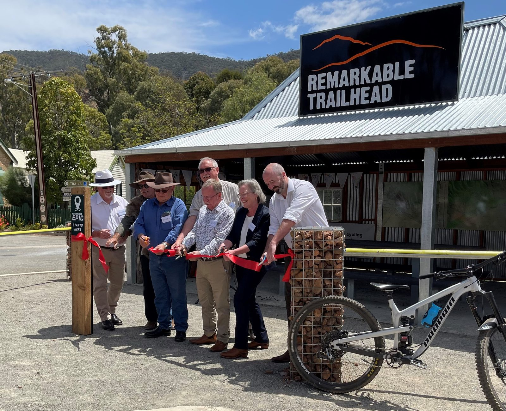

Southern Flinders Ranges, South Australia · Since 2021
Four separate reserves joined into one national park, at the heart of a connected precinct on Nukunu Country.
30,000HectaresEstablished parks and state land connected into one precinct.
$10mProjectA collaboration between environmental organisations, economic agencies, and local and state governments.
430Hectares added430 hectares joined the Southern Flinders precinct in 2024.
Image to come Southern Flinders Ranges landscape
The opportunity
Four reserves that had never been joined up
The Southern Flinders had the parks but not the connections. Telowie Gorge, Wirrabara Range, Spaniards Gully and part of Mount Remarkable National Park sat near one another without being joined, until the land in between came available.
The project joined them into Wapma Thura–Southern Flinders Ranges National Park, at the heart of a precinct of roughly 30,000 hectares, so that species can move through the landscape rather than being marooned in patches of it.
Image to come Nukunu Country
The partnership
The Nukunu, two governments and three councils
The Nukunu people are the Traditional Owners of Wapma Thura–Southern Flinders Ranges National Park. Wapma Thura means Snake People and carries an important creation story for this Country.
The Remarkable Southern Flinders is a $10 million project: $5 million from the South Australian Government, matched by $5 million from the Australian Government’s Building Better Regions Fund. National Parks and Wildlife Service South Australia and the Department for Environment and Water deliver the work on the ground, and three councils and Regional Development Australia Yorke and Mid North are at the table because the outcome is regional as well as ecological.
Image to come Flinders Fingers orchid, or Yellow-footed Rock-wallaby
What it protects
An orchid that grows nowhere else
The Flinders Fingers orchid is found here and nowhere else on Earth. Telowie Gorge is home to a colony of Yellow-footed Rock-wallabies at the southern edge of their range.
The Grossmans Block acquisition added restored land protecting thirteen rare plant species and nine conservation-listed animals, among them the nationally significant Flinders Worm-lizard.

Opening the Remarkable Trailhead in Melrose, where the Epic begins.
The outcome
A reason for the region to want the park there
Designed in close consultation with the Nukunu Wapma Thura Aboriginal Corporation, the Remarkable Epic, a 38 kilometre mountain bike trail, opened near Melrose in October 2023, looping out from the Remarkable Trailhead in town. Alongside it, 20 kilometres of new trails have opened in Mount Remarkable National Park at Willowie, the Mambray Creek campground and day visitor area have been upgraded, and Wirrabara has new and improved day visitor facilities.
That is not tourism for its own sake. A park that the surrounding region has a stake in is a park that stays protected, and the visitor economy is part of what makes the conservation case hold locally.
 Growing National Parks
NSW
Growing National Parks
NSW


 Growing National Parks
NSW
Growing National Parks
NSW
 Growing National Parks
SA
Growing National Parks
SA